Day One: Travelling there.
TODO: provide more context
My flight was scheduled to depart at six in the morning from Richmond to Atlanta; so I had to wake up at around three, which is already not ideal as I only had four hours of sleep last night.
I actually drove for the first time on the interstate, it saved 15 minutes (the drive was 30 minutes) to the airport. Going on the interstate usually scares me, entering and exiting from the runway is always a risk along with the high speed limits. In this case, it was around 3:40AM and there were barely any cars around; it was a genuine vibe to drive this early in the morning.
Unfortunately daily parking was a whopping fifteen dollars a day; if I parked elsewhere and took the park and ride shuttles, it would only have been eight dollars a day instead, lesson learned!
My family and I pre checked our flight without any checked baggages and TSA was relatively quick, so we arrived at the gate an hour early without much stress.
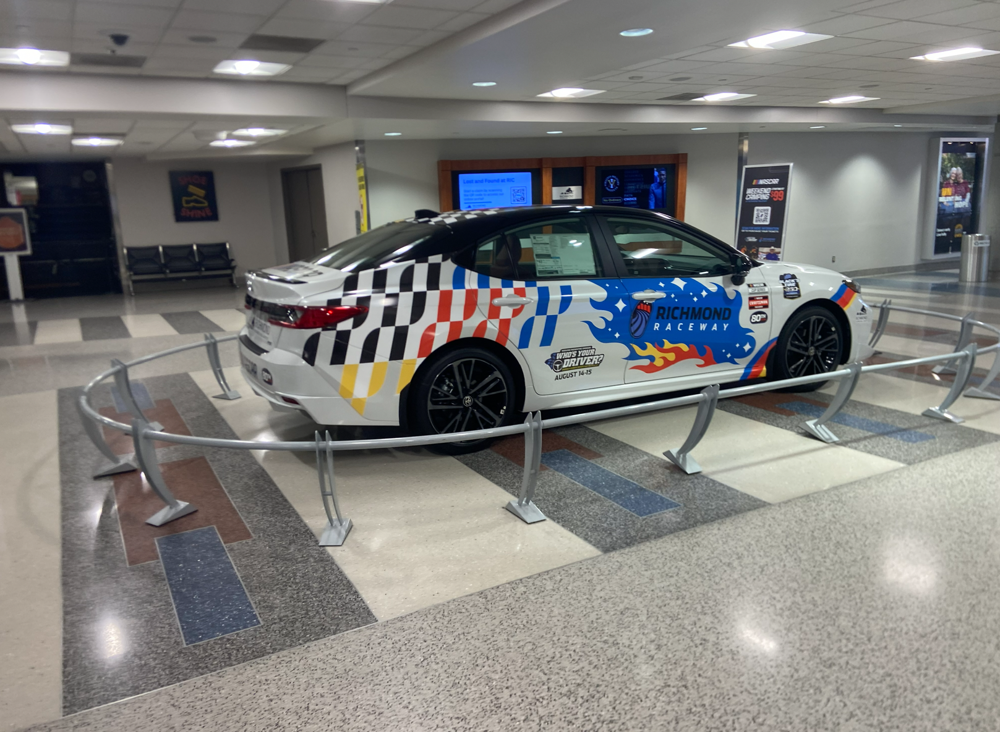
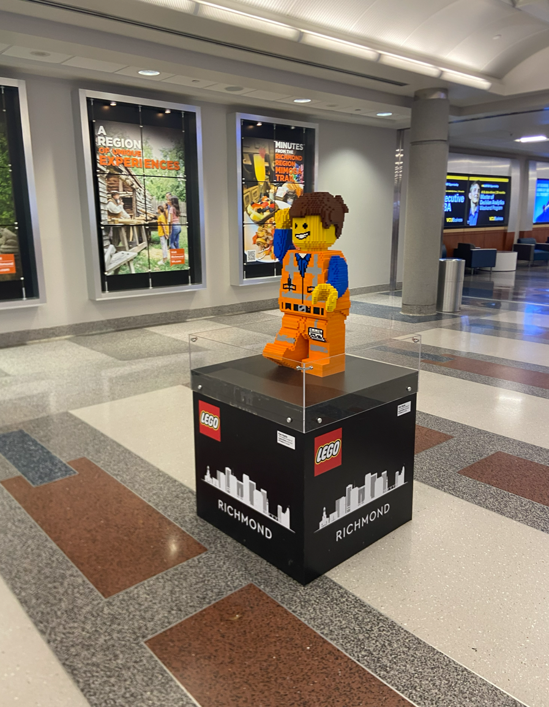
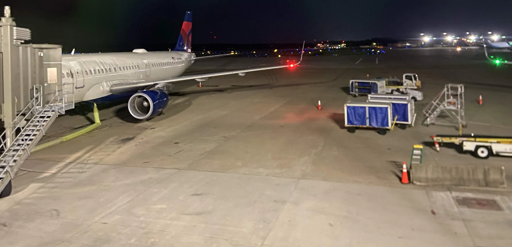
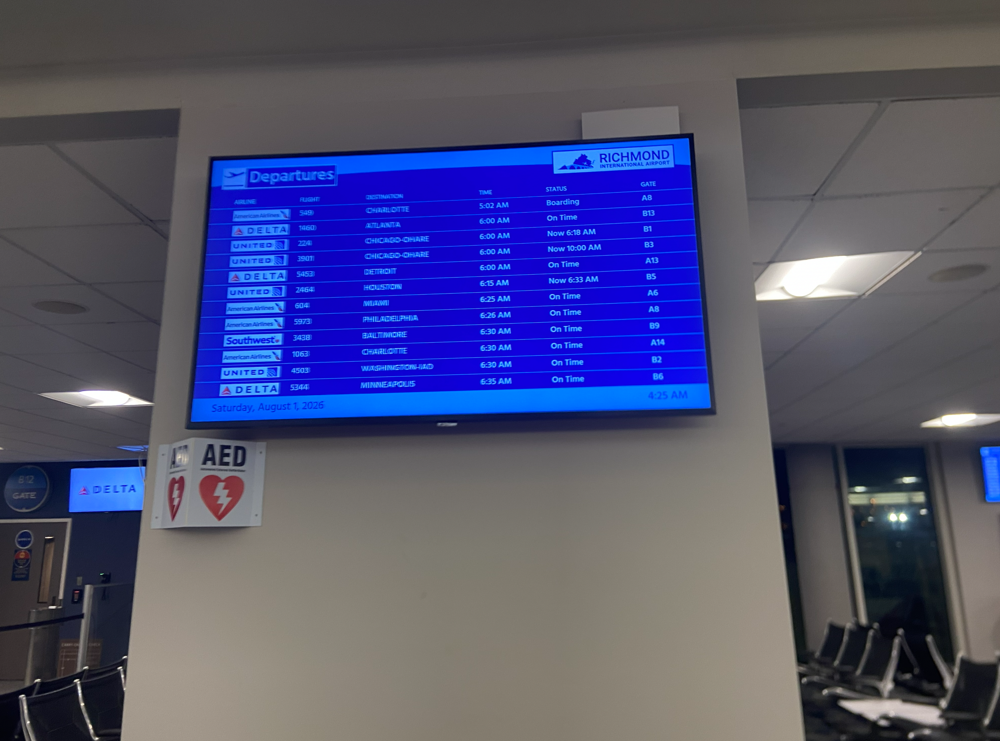
Now of course, nothing ever goes completely smooth during a flight and this is no exception. We boarded the flight at around 5:20AM, and it was scheduled to depart a little earlier funnily enough. But, after everyone boarded the plane and the door was closed, the plane stayed put for a solid fourty minutes. I do not know what happened with ground control, but it made the connecting flight from Atlanta to Bozeman much more tighter.
After enough idling and staying put, the plane finally took off!
I played chess on the flight; I picked the hardest difficulty against a computer and beat it handily. If you were curious, it was an open Spanish where the computer took the pawn on e4 with the knight, but then also took the pawn on d4, which was a critial mistake as you’ll lose the knight in the process.
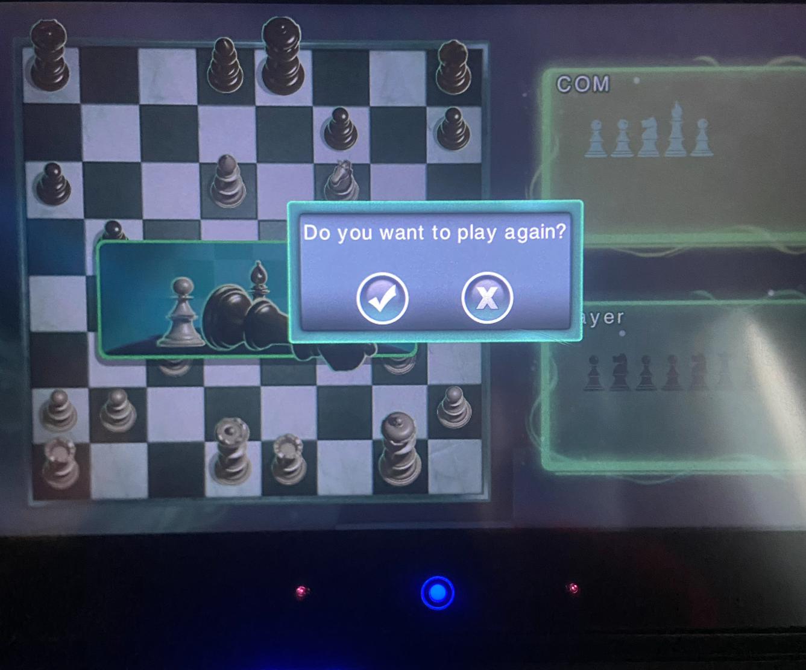
Despite this only being an hour long flight, the flight attendants came around with snackies!
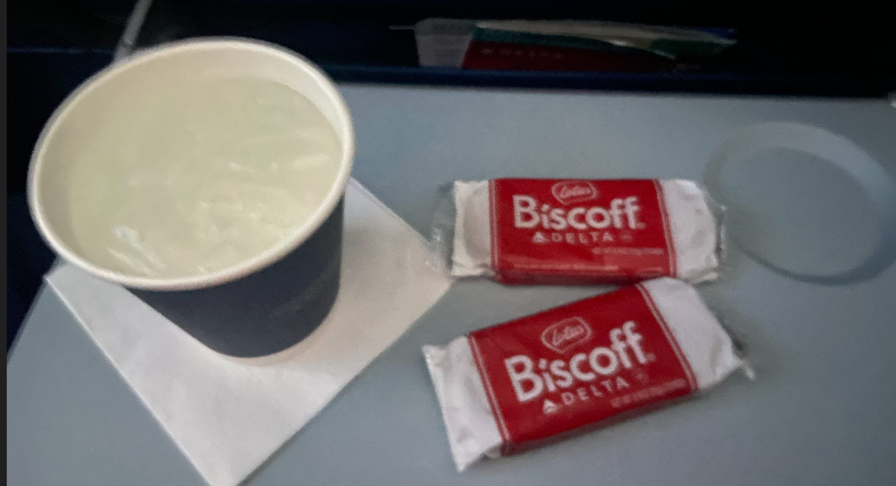
Excuse the poor photo quality.The plane landed at around five minutes before eight in Atlanta, and our next flight is scheduled to board at 8:10AM and departs at 8:50AM, barely an hour-long layover.
It wasn’t too fun that our flight’s gate was at a different terminal, and since this is the largest airport in the world, we had to take the subway and our gate was at the very end of the terminal as well. :)
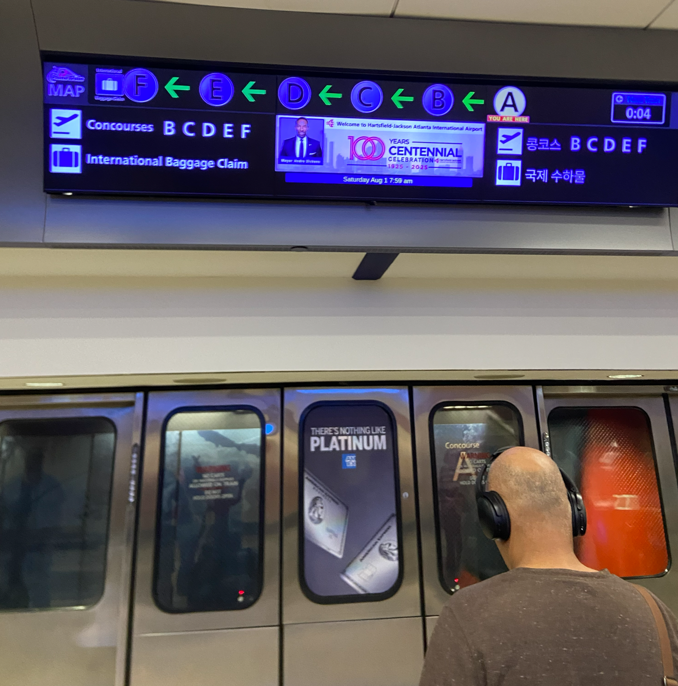
We made it to the gate right before boarding stopped, a little too close for comfort.
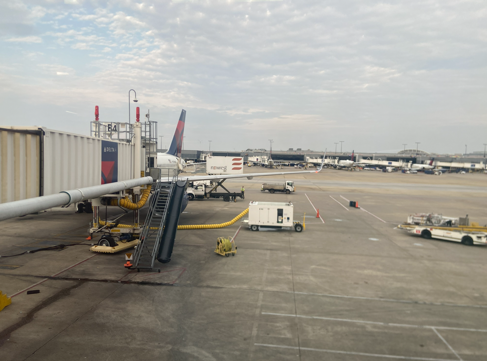
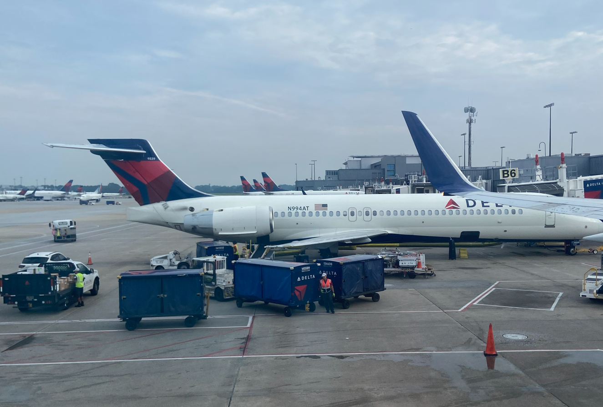
This flight was much longer, around four hours long compared to the hour and a half fight to Atlanta.
I used much of that time to watch a show on YouTube called “Battle for Dream Island Again”, a show where everyday objects becomes personable and compete in various contests to win Dream Island. I’m watching the second season; the first season is called “Battle for Dream Island” (as you might have expected). My sister and a friend actually got me back into the series; I used to be obsessed during COVID but haven’t been following ever since the fourth seasoned concluded. It has much quirky stuff and inside jokes within the series, highly recommend!
As the plane was descending into Bozeman, the first thing I noticed whilst looking out of the window is that there was almost nothing to see, just flat ground upon miles and miles on end. I think this is pretty common among the Midwest.
Welcome to Bozeman!
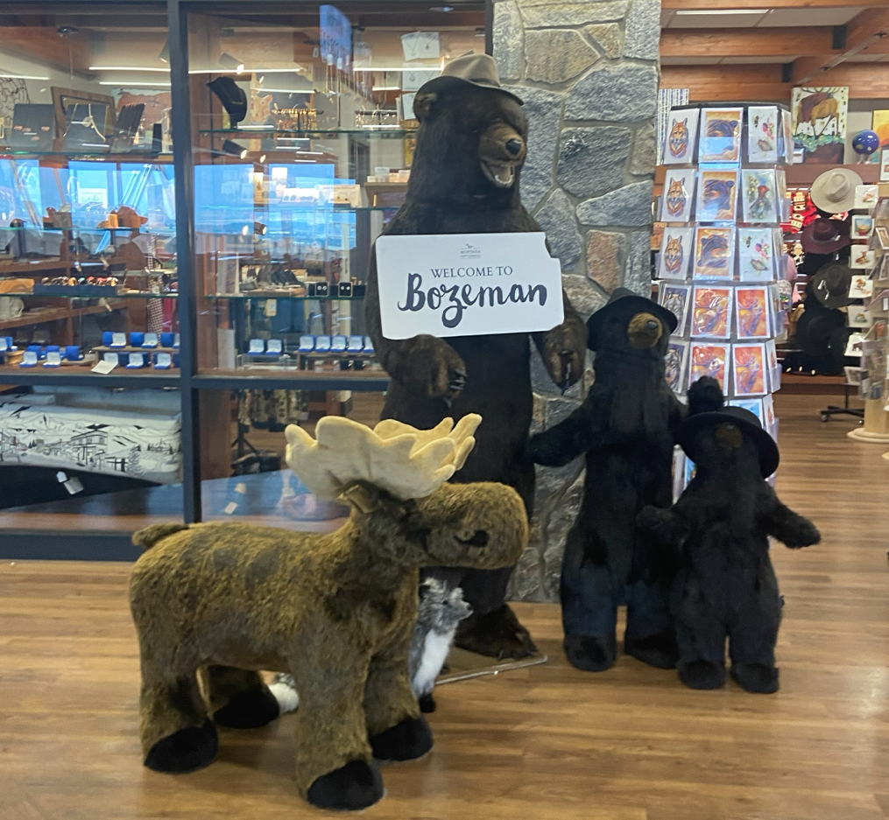
The rental car was waiting for us; it was a Jeep (of some sort). Something to note that most of the cars you see in this enviroment are Jeeps, pickup trucks, etc. This is mainly because that since there is almost nothing, the roads have higher speed limits, which means that you need a more powerful car in order to navigate.
And for our first stop….
You guessed it!
A Costco.
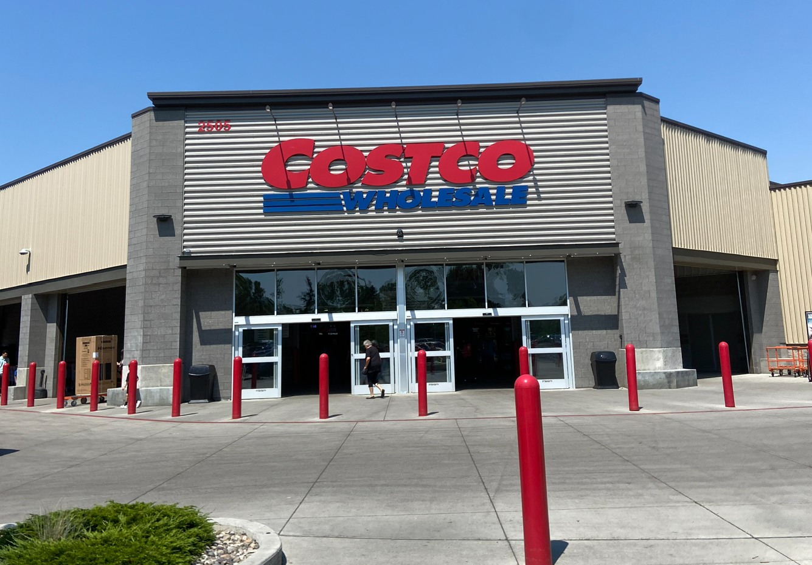
We bought food, water, and some sprays as it’s likely it will be even more expensive to buy those items within Yellowstone, the prices at the Costco are already horrifically expensive.
Here’s some photos taken while driving to the hotel, located in Gardiner.
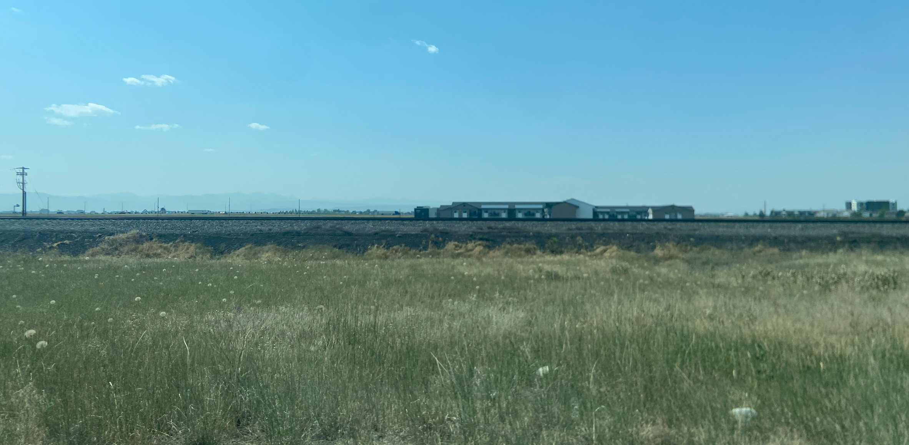
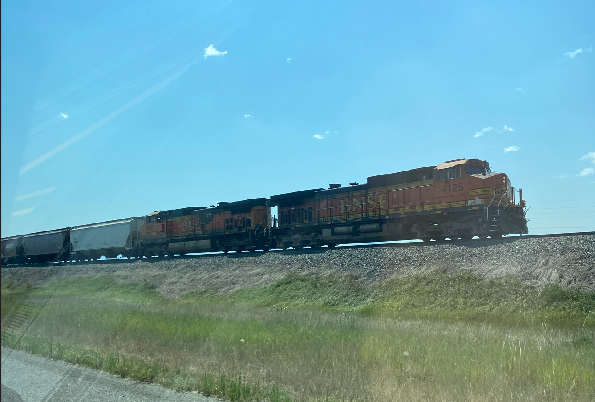
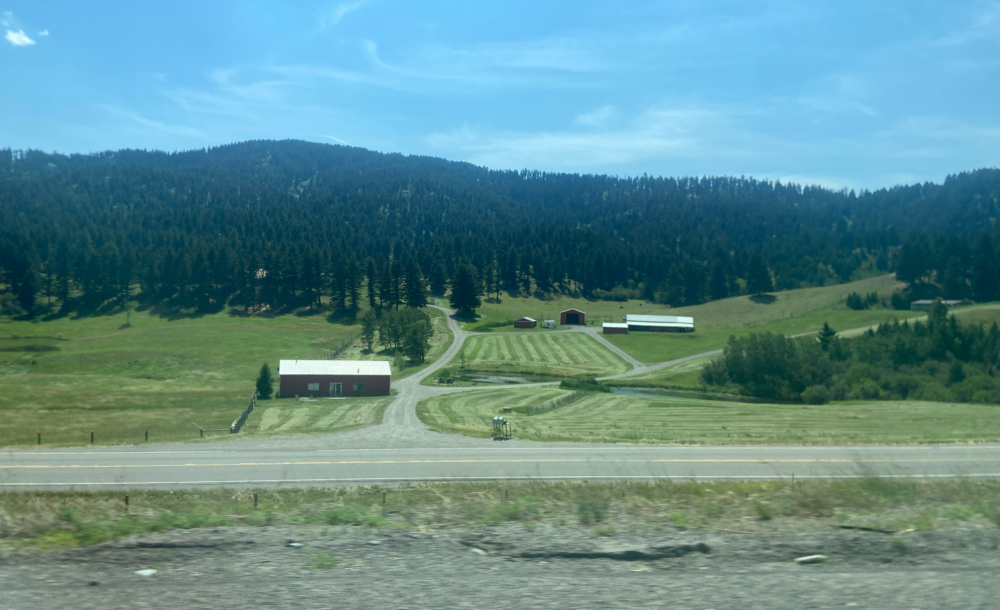
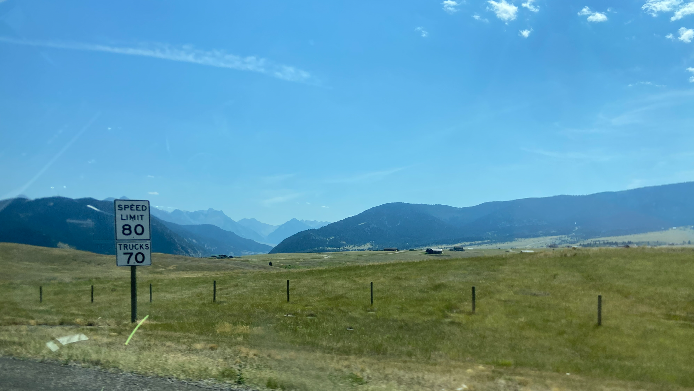
Did you know that only nine states has a maximum speed limit of 80 miles per hour? Furthermore, Texas has a 41-mile toll highway that has a maximum speed limit of 85 miles per hour, the highest in the Western Hemisphere!
Last modified on 2026-08-06